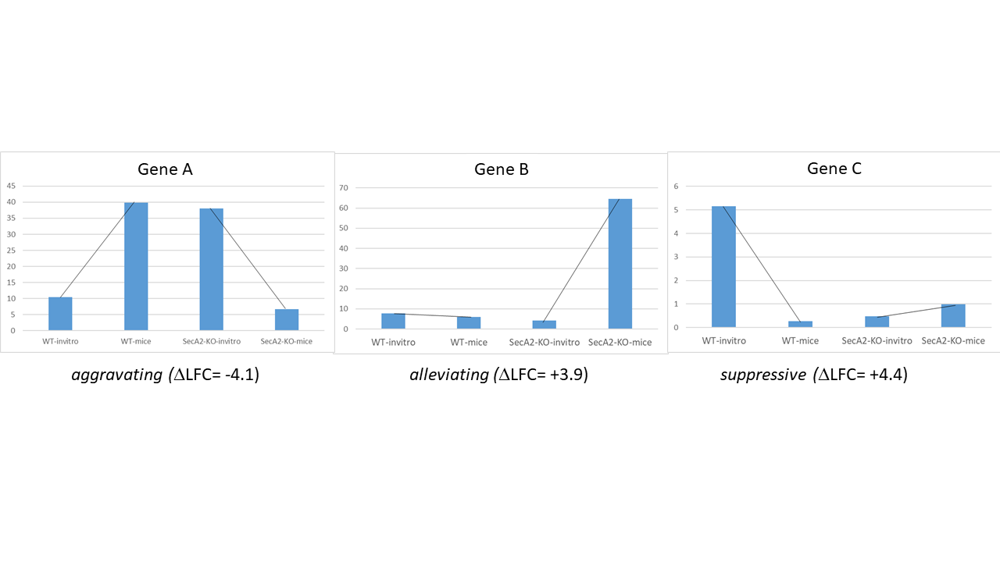

Analysis Methods (Expand Me First!)
TRANSIT has analysis methods capable of analyzing Himar1 and Tn5 datasets. Below is a description of some of the methods.
The analysis methods in Transit are also described in this PDF manual .
Gumbel
The Gumbel can be used to determine which genes are essential in a single condition. It does a gene-by-gene analysis of the insertions at TA sites with each gene, makes a call based on the longest consecutive sequence of TA sites without insertion in the genes, calculates the probability of this using a Bayesian model.
Note
Intended only for Himar1 datasets.
How does it work?
This method for identifying essential genes is based on analyzing ‘gaps’, or consecutive sequences of TA sites lacking insertions. The statistical significance of the length of a gap is determined using the Gumbel distribution, which is a form of an Extreme-Value distribution.
For a formal description of how this method works, see our paper [DeJesus2013]:
Update (2021) - Binomial
Since the Gumbel method depends on the overall saturation (percent of TA sites with insertions), it can sometimes call a lot of smaller genes ‘Uncertain’. This might reduce the total number of essentials detected. For example, if the saturation is ~30%, no genes with fewer than ~10 TA sites might confidently be labeled as Essential. In particular, there are often genes with no insertions that look like they should obviously be called essential, and yet, they are too short to be confidently called essential in low-saturation datasets by the conservative Gumbel model.
To compensate for this, we have added a simple Binomial model for detecting small genes totally lacking insertions (described in (Choudhery et al, 2021)). In the output file, they are labled as ‘EB’ to distinguish them from essentials (E) based on the Gumbel model. The EB genes supplement genes marked E by Gumbel, and the combination of the 2 groups (E and EB) should be considered as ‘essentials’. The number of genes in each category is reported in a table in the header of the output file, like this:
(for an M. tuberculosis TnSeq dataset with 60% saturation:)
#Summary of Essentiality Calls:
# E = 551 (essential based on Gumbel)
# EB = 94 (essential based on Binomial)
# NE = 2829 (non-essential)
# U = 262 (uncertain)
# S = 254 (too short)
(for an M. tuberculosis TnSeq dataset with 40% saturation:)
# E = 194 (essential based on Gumbel)
# EB = 315 (essential based on Binomial)
# NE = 2441 (non-essential)
# U = 774 (uncertain)
# S = 266 (too short)
Usage
> python3 transit.py gumbel <comma-separated .wig files> <annotation .prot_table or GFF3> <output file> [Optional Arguments]
Optional Arguments:
-s <integer> := Number of samples. Default: -s 10000
-b <integer> := Number of Burn-in samples. Default -b 500
-m <integer> := Smallest read-count to consider. Default: -m 1
-t <integer> := Trims all but every t-th value. Default: -t 1
-r <string> := How to handle replicates. Sum or Mean. Default: -r Sum
-iN <float> := Ignore TAs occuring at given percentage (as integer) of the N terminus. Default: -iN 0
-iC <float> := Ignore TAs occuring at given percentage (as integer) of the C terminus. Default: -iC 0
Parameters
Samples: Gumbel uses Metropolis-Hastings (MH) to generate samples of posterior distributions. The default setting is to run the simulation for 10,000 iterations. This is usually enough to assure convergence of the sampler and to provide accurate estimates of posterior probabilities. Less iterations may work, but at the risk of lower accuracy.
Burn-In: Because the MH sampler many not have stabilized in the first few iterations, a “burn-in” period is defined. Samples obtained in this “burn-in” period are discarded, and do not count towards estimates.
Trim: The MH sampler produces Markov samples that are correlated. This parameter dictates how many samples must be attempted for every sampled obtained. Increasing this parameter will decrease the auto-correlation, at the cost of dramatically increasing the run-time. For most situations, this parameter should be left at the default of “1”.
Minimum Read: The minimum read count that is considered a true read. Because the Gumbel method depends on determining gaps of TA sites lacking insertions, it may be susceptible to spurious reads (e.g. errors). The default value of 1 will consider all reads as true reads. A value of 2, for example, will ignore read counts of 1.
Replicates: Determines how to deal with replicates by averaging the read-counts or summing read counts across datasets. This should not have an affect for the Gumbel method, aside from potentially affecting spurious reads.
Outputs and diagnostics
The Gumbel method generates a tab-separated output file at the location chosen by the user. This file will automatically be loaded into the Results Files section of the GUI, allowing you to display it as a table. Alternatively, the file can be opened in a spreadsheet software like Excel as a tab-separated file. The columns of the output file are defined as follows:
Column Header |
Column Definition |
|---|---|
ORF |
Gene ID. |
Name |
Name of the gene. |
Description |
Gene description. |
k |
Number of Transposon Insertions Observed within the ORF. |
n |
Total Number of TA dinucleotides within the ORF. |
r |
Length of the Maximum Run of Non-Insertions observed. |
s |
Span of nucleotides for the Maximum Run of Non-Insertions. |
zbar |
Posterior Probability of Essentiality. |
Call |
Essentiality call for the gene. Depends on FDR corrected thresholds. E=Essential U=Uncertain, NE=Non-Essential, S=too short |
Run-time
The Gumbel method takes on the order of 10 minutes for 10,000 samples. Run-time is linearly proportional to the ‘samples’ parameter, or length of MH sampling trajectory. Other notes: Gumbel can be run on multiple replicates; replicate datasets will be automatically merged.
griffin
This is an earlier version of the Gumbel method that identifies essential genes based on how unlikely ‘gaps’ (or consecutive runs of TA sites with 0 insertions) are, given the overall level of saturation. It is a frequentist (non-Bayesian) model that uses the Gumbel Extreme-Value Distribution as a likelihood function. This is the analysis used in our paper on cholesterol catabolism (Griffin et al., 2011). All things considered, you are probably better off using the hierarchical-Bayesian Gumbel model above, which does a better job of estimating internal parameters.
Tn5Gaps
The Tn5Gaps method can be used to determine which genes are essential in a single condition for Tn5 datasets. It does an analysis of the insertions at each site within the genome, makes a call for a given gene based on the length of the most heavily overlapping run of sites without insertions (gaps), calculates the probability of this using a the Gumbel distribution.
Note
Intended only for Tn5 datasets.
How does it work?
This method is loosely is based on the original gumbel analysis method described in this paper:
Griffin, J.E., Gawronski, J.D., DeJesus, M.A., Ioerger, T.R., Akerley, B.J., Sassetti, C.M. (2011). High-resolution phenotypic profiling defines genes essential for mycobacterial survival and cholesterol catabolism. PLoS Pathogens, 7(9):e1002251.
The Tn5Gaps method modifies the original method in order to work on Tn5 datasets, which have significantly lower saturation of insertion sites than Himar1 datasets. The main difference comes from the fact that the runs of non-insertion (or “gaps”) are analyzed throughout the whole genome, including non-coding regions, instead of within single genes. In doing so, the expected maximum run length is calculated and a p-value can be derived for every run. A gene is then classified by using the p-value of the run with the largest number of nucleotides overlapping with the gene.
This method was tested on a Salmonella Tn5 dataset presented in this paper:
Langridge GC, Phan MD, Turner DJ, Perkins TT, Parts L, Haase J, Charles I, Maskell DJ, Peters SE, Dougan G, Wain J, Parkhill J, Turner AK. (2009). Simultaneous assay of every Salmonella Typhi gene using one million transposon mutants. Genome Res. , 19(12):2308-16.
This data was downloaded from SRA (located here) , and used to make wig files (baseline and bile) and the following 4 baseline datasets were merged to make a wig file: (IL2_2122_1,3,6,8). Our analysis produced 415 genes with adjusted p-values less than 0.05, indicating essentiality, and the analysis from the above paper produced 356 essential genes. Of these 356 essential genes, 344 overlap with the output of our analysis.
Usage
python3 ../../../transit.py tn5gaps <comma-separated .wig files> <annotation .prot_table or GFF3> <output file> [Optional Arguments]
Optional Arguments:
-m <integer> := Smallest read-count to consider. Default: -m 1
-r <string> := How to handle replicates. Sum or Mean. Default: -r Sum
-iN <float> := Ignore TAs occuring within given percentage (as integer) of the N terminus. Default: -iN 0
-iC <float> := Ignore TAs occuring within given percentage (as integer) of the C terminus. Default: -iC 0
Parameters
Minimum Read: The minimum read count that is considered a true read. Because the Gumbel method depends on determining gaps of TA sites lacking insertions, it may be suceptible to spurious reads (e.g. errors). The default value of 1 will consider all reads as true reads. A value of 2, for example, will ignore read counts of 1.
Replicates: Determines how to deal with replicates by averaging the read-counts or suming read counts accross datasets. This should not have an affect for the Gumbel method, aside from potentially affecting spurious reads.
-iN: Trimming of insertions in N-terminus (given as percentage of ORF length, e.g. “5” for 5%; default=0)
-iC: Trimming of insertions in C-terminus (given as percentage of ORF length, e.g. “5” for 5%; default=0)
Example
python3 PATH/src/transit.py tn5gaps salmonella_baseline.wig Salmonella-Ty2.prot_table salmonella_baseline_tn5gaps_trimmed.dat -m 2 -r Sum -iN 5 -iC 5
These input and output files can be downloaded from the Example Data section on the Transit home page .
Outputs and diagnostics
The Tn5Gaps method generates a tab-separated output file at the location chosen by the user. This file will automatically be loaded into the Results Files section of the GUI, allowing you to display it as a table. Alternatively, the file can be opened in a spreadsheet software like Excel as a tab-separated file. The columns of the output file are defined as follows:
Column Header |
Column Definition |
|---|---|
ORF |
Gene ID. |
Name |
Name of the gene. |
Desc |
Gene description. |
k |
Number of Transposon Insertions Observed within the ORF. |
n |
Total Number of TA dinucleotides within the ORF. |
r |
Length of the Maximum Run of Non-Insertions observed. |
ovr |
The number of nucleotides in the overlap with the longest run partially covering the gene. |
lenovr |
The length of the above run with the largest overlap with the gene. |
pval |
P-value calculated by the permutation test. |
padj |
Adjusted p-value controlling for the FDR (Benjamini-Hochberg). |
call |
Essentiality call for the gene. Depends on FDR corrected thresholds. Essential or Non-Essential. |
Run-time
The Tn5Gaps method takes on the order of 10 minutes. Other notes: Tn5Gaps can be run on multiple replicates; replicate datasets will be automatically merged.
HMM
The HMM method can be used to determine the essentiality of the entire genome, as opposed to gene-level analysis of the other methods. It is capable of identifying regions that have unusually high or unusually low read counts (i.e. growth advantage or growth defect regions), in addition to the more common categories of essential and non-essential.
Note
Intended only for Himar1 datasets.
How does it work?
Example
python3 transit.py hmm <comma-separated .wig files> <annotation .prot_table or GFF3> <output file>
Optional Arguments:
-r <string> := How to handle replicates. Sum, Mean. Default: -r Mean
-l := Perform LOESS Correction; Helps remove possible genomic position bias. Default: Off.
-iN <float> := Ignore TAs occuring at given percentage (as integer) of the N terminus. Default: -iN 0
-iC <float> := Ignore TAs occuring at given percentage (as integer) of the C terminus. Default: -iC 0
Parameters
The HMM method automatically estimates the necessary statistical parameters from the datasets. You can change how the method handles replicate datasets:
Replicates: Determines how the HMM deals with replicate datasets by either averaging the read-counts or summing read counts across datasets. For regular datasets (i.e. mean-read count > 100) the recommended setting is to average read-counts together. For sparse datasets, it summing read-counts may produce more accurate results.
Output and Diagnostics
Column # |
Column Definition |
|---|---|
1 |
Coordinate of TA site |
2 |
Observed Read Counts |
3 |
Probability for ES state |
4 |
Probability for GD state |
5 |
Probability for NE state |
6 |
Probability for GA state |
7 |
State Classification (ES = Essential, GD = Growth Defect, NE = Non-Essential, GA = Growth-Defect) |
8 |
Gene(s) that share(s) the TA site. |
Column Header |
Column Definition |
|---|---|
Orf |
Gene ID |
Name |
Gene Name |
Desc |
Gene Description |
N |
Number of TA sites |
n0 |
Number of sites labeled ES (Essential) |
n1 |
Number of sites labeled GD (Growth-Defect) |
n2 |
Number of sites labeled NE (Non-Essential) |
n3 |
Number of sites labeled GA (Growth-Advantage) |
Avg. Insertions |
Mean insertion rate within the gene |
Avg. Reads |
Mean read count within the gene |
State Call |
State Classification (ES = Essential, GD = Growth Defect, NE = Non-Essential, GA = Growth-Defect) |
Run-time
Resampling
The resampling method is a comparative analysis the allows that can be used to determine conditional essentiality of genes. It is based on a permutation test, and is capable of determining read-counts that are significantly different across conditions.
See Pathway Enrichment Analysis for post-processing the hits to determine if the hits are associated with a particular functional catogory of genes or known biological pathway.
Note
Can be used for both Himar1 and Tn5 datasets
How does it work?
This technique has yet to be formally published in the context of differential essentiality analysis. Briefly, the read-counts at each genes are determined for each replicate of each condition. The mean read-count in condition A is subtracted from the mean read-count in condition B, to obtain an observed difference in means. The TA sites are then permuted for a given number of “samples”. For each one of these permutations, the difference in read-counts is determined. This forms a null distribution, from which a p-value is calculated for the original, observed difference in read-counts.
Usage
python3 transit.py resampling <comma-separated .wig control files> <comma-separated .wig experimental files> <annotation .prot_table or GFF3> <output file> [Optional Arguments]
Optional Arguments:
-s <integer> := Number of samples. Default: -s 10000
-n <string> := Normalization method. Default: -n TTR
-h := Output histogram of the permutations for each gene. Default: Turned Off.
-a := Perform adaptive resampling. Default: Turned Off.
-ez := Exclude rows with zero accross conditions. Default: Turned off
(i.e. include rows with zeros).
-PC <float> := Pseudocounts used in calculating LFC. (default: 1)
-l := Perform LOESS Correction; Helps remove possible genomic position bias.
Default: Turned Off.
-iN <float> := Ignore TAs occuring at given percentage (as integer) of the N terminus. Default: -iN 0
-iC <float> := Ignore TAs occuring at given percentage (as integer) of the C terminus. Default: -iC 0
--ctrl_lib := String of letters representing library of control files in order
e.g. 'AABB'. Default empty. Letters used must also be used in --exp_lib
If non-empty, resampling will limit permutations to within-libraries.
--exp_lib := String of letters representing library of experimental files in order
e.g. 'ABAB'. Default empty. Letters used must also be used in --ctrl_lib
If non-empty, resampling will limit permutations to within-libraries.
Parameters
The resampling method is non-parametric, and therefore does not require any parameters governing the distributions or the model. The following parameters are available for the method:
Samples: The number of samples (permutations) to perform. The larger the number of samples, the more resolution the p-values calculated will have, at the expense of longer computation time. The resampling method runs on 10,000 samples by default.
Output Histograms: Determines whether to output .png images of the histograms obtained from resampling the difference in read-counts.
Adaptive Resampling: An optional “adaptive” version of resampling which accelerates the calculation by terminating early for genes which are likely not significant. This dramatically speeds up the computation at the cost of less accurate estimates for those genes that terminate early (i.e. deemed not significant). This option is OFF by default. (see Notes below)
Include Zeros: Select to include sites that are zero. This is the preferred behavior, however, unselecting this (thus ignoring sites that) are zero accross all dataset (i.e. completely empty), is useful for decreasing running time (specially for large datasets like Tn5).
Normalization Method: Determines which normalization method to use when comparing datasets. Proper normalization is important as it ensures that other sources of variability are not mistakenly treated as real differences. See the Normalization section for a description of normalization method available in TRANSIT.
--ctrl_lib, --exp_lib: These are for doing resampling with datasets from multiple libraries, see below.
-iN, -iC: Trimming of TA sites near N- and C-terminus. The default for trimming TA sites in the termini of ORFs is 0. However, TA sites in the stop codon (e.g. TAG) are automatically excluded. Trimming is specified as a percentage (as an integer), so, for example, if you want to trim TA sites within 5% of the termini, you would add the flags ‘-iN 5 -iC 5’ (not 0.05).
-PC: Pseudocounts used in calculation of LFCs (log-fold-changes, see Output and Diagnostics) in resampling output file. To suppress the appearance of artifacts due to high-magnitude of LFCs from genes with low insertion counts (which are more susceptible to noise), one can increase the pseudocounts using `-PC’. Increasing PC to a value like 5 (which is reasonable, given that TTR normalization scales data so average insertion counts is around 100) can further reduce the appearance of artifacts (genes with low counts but large LFCs). However, changing pseudocounts only affects the LFCs, and will not change the number of significant genes.
Notes
I recommend using -a (adaptive resampling). It runs much faster, and the p-values will be very close to a full non-adaptive run (all 10,000 samples).
Occasionally, people ask if resampling can be done on intergenic regions as well. It could be done pretty easily (for example by making a prot_table with coordinates for the regions between genes). But it is usually not worthwhile, because most intergenic regions are small (<100 bp) contain very few TA sites (often 0-2), making it difficult to make confident calls on essentiality.
Doing resampling with a combined_wig file
Resampling can also now take a combined_wig file as input (containing insertion counts for multiple sample), along with a samples_metadata file that describes the samples. This mode is indicated with a ‘-c’ flag. If you want to compare more than two conditions, see ZINB.
usage:
python3 transit.py resampling -c <combined_wig> <samples_metadata> <control_condition_name> <experimental_condition_name> <annotation .prot_table or GFF3> <output file> [Optional Arguments]
example:
python3 transit.py resampling -c antibiotic_combined_wig.txt antibiotic_samples_metadata.txt Untreated Isoniazid H37Rv.prot_table results.txt -a
Doing resampling with datasets from different libraries.
In most cases, comparisons are done among samples (replicates) from the same library evaluated in two different conditions. But if the samples themselves come from different libraries, then this could introduce extra variability, the way resampling is normally done. To compensate for this, if you specify which libraries each dataset comes from, the permutations will be restricted to permuting counts only among samples within each library. Statistical significance is still determined from all the data in the end (by comparing the obversed difference of means between the two conditions to a null distribution). Of course, this method makes most sense when you have at least 1 replicate from each library in each condition.
Doing resampling between different strains.
The most common case is that resampling is done among replicates all from the same Tn library, and hence all the datasets (fastq files) are mapped to the same refence genome. Occasionally, it is useful to compare TnSeq datasets between two different strains, such as a reference strain and a clinical isolate from a different lineage. Suppose for simplicity that you want to compare one replicate from strain A (e.g. H37Rv) and one replicate from strain B (e.g. CDC1551). Resampling was not originally designed to handle this case. The problem is that the TA sites in the .wig files with insertion counts might have different coordinates (because of shifts due to indels between the genomes). Furthermore, a given gene might not even have the same number of TA sites in the two strains (due to SNPs). A simplistic solution is to just map both datasets to the same genome sequence (say H37Rv, for example). Then a resampling comparison could be run as usual, because the TA sites would all be on the same coordinate system. This is not ideal, however, because some reads of strain B might not map properly to genome A due to SNPs or indels between the genomes. In fact, in more divergent organisms with higher genetic diversity, this can cause entire regions to look artificially essential, because reads fail to map in genes with a large number of SNPs, resulting in the apparent absence of transposon insertions.
A better approach is to map each library to the custom genome sequence of its own strain (using TPP). It turns out the resampling can still be applied (since it is fundamentally a test on the difference of the mean insertion count in each gene). The key to making this work, aside from mapping each library to its own genome sequence, is that you need an annotation (prot_table) for the second strain that has been “adapted” from the first strain. This is because, to do a comparison between conditions for a gene, Transit needs to be able to determine which TA sites fall in that gene for each strain. This can be achieved by producing a “modified” prot_table, where the START and END coordinates of each ORF in strain B have been adjusted according to an alignment between genome A and genome B. You can use this web app: Prot_table Adjustment Tool, to create a modifed prot_table, given the prot_table for one strain and the fasta files for both genomes (which will be aligned). In other words, the app allows you to create ‘B.prot_table’ from ‘A.prot_table’ (and ‘A.fna’ and ‘B.fna’).
Once you have created B.prot_table, all you need to do is provide both prot_tables to resampling (either through the GUI, or on the command-line), as a comma-separated list. For example:
> python3 transit.py resampling Rv_1_H37Rv.wig,Rv_2_H37Rv.wig 632_1_632WGS.wig,632_2_632WGS.wig H37Rv.prot_table,632WGS.prot_table resampling_output.txt -a
In this example, 2 replicates from H37Rv (which had been mapped to H37Rv.fna by TPP) were compared to 2 replicates from strain 632 (which had been mapped to 632WGS.fna, the custom genome seq for strain 632). The important point is that two annotations are given in the 3rd arg on the command-line: H37Rv.prot_table,632WGS.prot_table. The assumption is that the ORF boundaries for H37Rv will be used to find TA sites in Rv_1_H37Rv.wig and Rv_2_H37Rv.wig, and the ORF boundaries in 632WGS.prot_table (which had been adapted from H37Rv.prot_table using the web app above) will be used to find TA sites in the corrsponding regions in 632_1_632WGS.wig and 632_2_632WGS.wig.
Note that, in contrast to handling datasets from different libraries disucssed above, in this case, the assumption is that all replicates in condition A will be from one library (and one strain), and all replicates in condition B will be from another library (another strain).
Output and Diagnostics
The resampling method outputs a tab-delimited file with results for each gene in the genome. P-values are adjusted for multiple comparisons using the Benjamini-Hochberg procedure (called “q-values” or “p-adj.”). A typical threshold for conditional essentiality on is q-value < 0.05.
Column Header |
Column Definition |
|---|---|
Orf |
Gene ID. |
Name |
Name of the gene. |
Description |
Gene description. |
Sites |
Number of TA sites in the gene. |
Mean Ctrl |
Mean of read counts in condition 1. (avg over TA sites and reps) |
Mean Exp |
Mean of read counts in condition 2. |
log2FC |
Log-fold-change of exp (treatment) over ctrl (untreated) |
Sum Ctrl |
Sum of read counts in condition 1. |
Sum Exp |
Sum of read counts in condition 2. |
Delta Mean |
Difference in the MEAN insertion counts. |
p-value |
P-value calculated by the permutation test. |
Adj. p-value |
Adjusted p-value controlling for the FDR (Benjamini-Hochberg) |
log2FC: (log-fold-change, LFC) For each gene, the LFC is calculated as the log-base-2 of the ratio of mean insertion counts in the experimental (treated) condition vs. the control condition (untreated, reference). The default is PC=1, which avoids the result being undefined for genes with means of 0 in either condition. Pseudocounts can be changed using the -PC flag (above).
LFC = log2((mean_insertions_in_exp + PC)/(mean_insertions_in_ctrl + PC))
Run-time
A typical run of the resampling method with 10,000 samples will take around 45 minutes (with the histogram option ON). Using the adaptive resampling option (-a), the run-time is reduced to around 10 minutes.
Mann-Whitney U-test (utest)
This is a method for comparing datasets from a TnSeq library evaluated in two different conditions, analogous to resampling. This is a rank-based test on whether the level of insertions in a gene or chromosomal region are significantly higher or lower in one condition than the other. Effectively, the insertion counts at the TA sites in the region are pooled and sorted. Then the combined ranks of the counts in region A are compared to those in region B, and p-value is calculated that reflects whether there is a significant difference in the ranks. The advantage of this method is that it is less sensitive to outliers (a unusually high insertion count at just a single TA site). A reference for this method is (Santa Maria et al., 2014).
Genetic Interactions
The genetic interactions (GI) method is a comparative analysis used used to determine genetic interactions. It is a Bayesian method that estimates the distribution of log fold-changes (logFC) in two strain backgrounds under different conditions, and identifies significantly large changes in enrichment (delta_logFC) to identify those genes that imply a genetic interaction.
Note
Can be used for both Himar1 and Tn5 datasets
How does it work?
GI performs a comparison among 4 groups of datasets, strain A and B assessed in conditions 1 and 2 (e.g. control vs treatment). It looks for interactions where the response to the treatment (i.e. effect on insertion counts) depends on the strain.
If you think of the effect of treatment as a log-fold-change (e.g. of the insert counts between control and treatment in strain A), which is like a “slope”, then the interacting genes are those that exhibit a difference in the effect of the treatment between the strains, and hence a difference in the slopes between strain A and B (represented by ‘delta_LFC’ in the output file).
Statistical Significance
The computation that is done by GI is to compute the posterior distribution of the delta_LFC (or mean change in slopes) through Bayesian sampling. The primary method to determine significance of genes is whethter this the mean_delta_LFC is significantly differnt than 0. However, since the mean_delta_LFC is a distribution, we represent it by a Highest Density Interval, HDI, which is similar to a 95% confidence interval. Furthermore, rather than asking whether the HDI overlaps 0 exactly, we expand the interval around 0 to a Region of Probable Equivalence (ROPE), which is set to [-0.5,0.5] by default. Hence the significant genes are those for which the HDI does not overlap the ROPE. GI has a flag to adjust the size of the ROPE, if desired.
In the GI output file, the final column give the significance call, along with type of interaction. If a gene is not significant, it will be marked with “No Interaction” (for the HDI method, meaning HDI overlaps the ROPE). If a gene IS significant, then its interaction will be cateogrized in 3 types (see NAR paper):

Aggravating - mean_delta_LFC is negative; gene is more required in treatment than control in the B strain, compared to the A strain
Suppressive - mean_delta_LFC is positive, and the gene was not conditionally essential in strain A (flat slope), but becomes conditionally non-essential in strain B when treated (positive slope)
Alleviating - mean_delta_LFC is positive, but the conditional requirement (negative slope) of the gene in strain A with treatment is “cancelled” by the modification in strain B
A limitation of this HDI approach is that it is discrete (i.e. overlap is either True or False), but does not provide a quantitative metric for the degree of overlap. Thus a second method for assessing significance of genetic interactions is to compute the probability of overlap. The lower the probability, the more differnt the delta_LFC is from 0, indicating a more significant interaction. In this case, genes with prob < 0.05 are considered interactions and classified by the 3 types above, while genes with prob >= 0.05 are marked as “No Interaction”.
In addition, since we are calculating significance for thousands of genes in parallel, many researchers prefer to have some method for correcting for multiple tests, to control the false discovery rate. However, FDR correction is generally used only for frequentist analyses, and he GI method is fundamentally a Bayesian approach. Technically, in a Bayesian framework, FDR correction is not needed. Any adjustment for expectations about number of hits would be achieved through adjusting parameters for prior distributions. Nonetheless, GI includes options for two methods that approximate FDR correction: BFDR (Bayesian False Discovery Rate correction, Newton M.A., Noueiry A., Sarkar D., Ahlquist P. (2004). Detecting differential gene expression with a semiparametric hierarchical mixture method. Biostatistics, 5:155–176.) and FWER (Familty-Wise Error Rate control). When these corrections are applied, a threshold of 0.05 for the adjusted probability of overlap is used for each, and this determines which genes are classified as interacting (1 of 3 types) or marked as “No Interaction”, as above.
In order to enable users to evaluate these various methods for determining significance of interactions, a ‘-signif’ flag is provided for the GI method. The options are:
-signif HDI: significant genes are those for which the HDI does not overlap the ROPE
-signif prob: significant genes are those with prob < 0.05, where ‘prob’ is porbability that HDI overlap the ROPE (default)
-signif BFDR: significant genes are those with adjusted prob < 0.05, where prob is adjusted by the BFDR method
-signif FWER: significant genes are those with adjusted prob < 0.05, where prob is adjusted by the FWER method
‘-signif prob’ is the default method.
In the output file, the genes are sorted by the probability that the HDI overlaps the ROPE. The genes at the top are rougly the genes with the highest absolute value of mean_delta_LFC.
Usage
python3 /pacific/home/ioerger/transit/src/transit.py GI <wigs_for_strA_cond1> <wigs_for_strA_cond2> <wigs_for_strB_cond1> <wigs_for_strB_cond2> <annotation .prot_table or GFF3> <output file> [Optional Arguments]
GI performs a comparison among 4 groups of datasets, strain A and B assessed in conditions 1 and 2 (e.g. control vs treatment).
It looks for interactions where the response to the treatment (i.e. effect on insertion counts) depends on the strain (output variable: delta_LFC).
Provide replicates in each group as a comma-separated list of wig files.
HDI is highest density interval for posterior distribution of delta_LFC, which is like a confidence interval on difference of slopes.
Genes are sorted by probability of HDI overlapping with ROPE. (genes with the highest abs(mean_delta_logFC) are near the top, approximately)
Significant genes are indicated by 'Type of Interaction' column (No Interaction, Aggravating, Alleviating, Suppressive).
By default, hits are defined as "Is HDI outside of ROPE?"=TRUE (i.e. non-overlap of delta_LFC posterior distritbuion with Region of Probably Equivalence around 0)
Alternative methods for significance: use -signif flag with prob, BFDR, or FWER. These affect 'Type of Interaction' (i.e. which genes are labeled 'No Interaction')
Optional Arguments:
-s <integer> := Number of samples. Default: -s 10000
--rope <float> := Region of Practical Equivalence. Area around 0 (i.e. 0 +/- ROPE) that is NOT of interest. Can be thought of similar to the area of the null-hypothesis. Default: --rope 0.5
-n <string> := Normalization method. Default: -n TTR
-iz := Include rows with zero across conditions.
-l := Perform LOESS Correction; Helps remove possible genomic position bias. Default: Turned Off.
-iN <float> := Ignore TAs occuring at given percentage (as integer) of the N terminus. Default: -iN 0
-iC <float> := Ignore TAs occuring at given percentage (as integer) of the C terminus. Default: -iC 0
-signif HDI := (default) Significant if HDI does not overlap ROPE; if HDI overlaps ROPE, 'Type of Interaction' is set to 'No Interaction'
-signif prob := Optionally, significant hits are re-defined based on probability (degree) of overlap of HDI with ROPE, prob<0.05 (no adjustment)
-signif BFDR := Apply "Bayesian" FDR correction (see doc) to adjust HDI-ROPE overlap probabilities so that significant hits are re-defined as BFDR<0.05
-signif FWER := Apply "Bayesian" FWER correction (see doc) to adjust HDI-ROPE overlap probabilities so that significant hits are re-defined as FWER<0.05
Example
In this example, the effect of a knockout of SigB is being evaluated for its effect on tolerance of isoniazid. Some genes may become more essential (or less) in the presence of INH in the wild-type strain. The genes implied to interact with SigB are those whose response to INH changes in the knock-out strain compared to the wild-type. Note there are 2 replicates in each of the 4 groups of datasets.
python3 transit/src/transit.py GI WT_untreated1.wig,WT_untreated2.wig WT_INH_1.wig,WT_INH_2.wig delta_SigB_untreated1.wig,delta_SigB_untreated2.wig delta_SigB_INH_1.wig,delta_SigB_INH_2.wig mc2_155_tamu.prot_table GI_delta_SigB_INH.txt
Parameters
The resampling method is non-parametric, and therefore does not require any parameters governing the distributions or the model. The following parameters are available for the method:
Samples: The number of samples (permutations) to perform. The larger the number of samples, the more resolution the p-values calculated will have, at the expense of longer computation time. The resampling method runs on 10,000 samples by default.
ROPE: Region of Practical Equivalence. This region defines an area around 0.0 that represents differences in the log fold-change that are practically equivalent to zero. This aids in ignoring spurious changes in the logFC that would otherwise be identified under a strict null-hypothesis of no difference.
Include Zeros: Select to include sites that are zero. This is the preferred behavior, however, unselecting this (thus ignoring sites that) are zero accross all dataset (i.e. completely empty), is useful for decreasing running time (specially for large datasets like Tn5).
Normalization Method: Determines which normalization method to use when comparing datasets. Proper normalization is important as it ensures that other sources of variability are not mistakenly treated as real differences. See the Normalization section for a description of normalization method available in TRANSIT.
Significance Method:
-signif HDI: significant genes are those for which the HDI does not overlap the ROPE
-signif prob: significant genes are those with prob < 0.05, where ‘prob’ is porbability that HDI overlap the ROPE (default)
-signif BFDR: significant genes are those with adjusted prob < 0.05, where prob is adjusted by the BFDR method
-signif FWER: significant genes are those with adjusted prob < 0.05, where prob is adjusted by the FWER method
Output and Diagnostics
The GI method outputs a tab-delimited file with results for each gene in the genome. All genes are sorted by significance using the probability that the HDI overlaps the ROPE. Significant genes are those NOT marked with ‘No Interaction’ in the last column.
Column Header |
Column Definition |
|---|---|
Orf |
Gene ID. |
Name |
Name of the gene. |
Number of TA Sites |
Number of TA sites in the gene. |
Mean count (Strain A Condition 1) |
Mean read count in strain A, condition 1 |
Mean count (Strain A Condition 2) |
Mean read count in strain A, condition 2 |
Mean count (Strain B Condition 1) |
Mean read count in strain B, condition 1 |
Mean count (Strain B Condition 2) |
Mean read count in strain B, condition 2 |
Mean logFC (Strain A) |
The log2 fold-change in read-count for strain A |
Mean logFC (Strain B) |
The log2 fold-change in read-count for strain B |
Mean delta logFC |
The difference in log2 fold-change between B and A |
Lower Bound delta logFC |
Lower bound of the difference (delta logFC) |
Upper Bound delta logFC |
Upper bound of the difference (delta logFC) |
Prob. of delta-logFC being within ROPE |
Portion of the delta-logFC within ROPE |
Adjusted Probability (BFDR) |
Posterior probability adjusted for comparisons |
Is HDI outside ROPE? |
True/False whether the delta-logFC overlaps ROPE |
Type of Interaction |
Final classification. |
ANOVA
The Anova (Analysis of variance) method is used to determine which genes exhibit statistically significant variability of insertion counts across multiple conditions. Unlike other methods which take a comma-separated list of wig files as input, the method takes a combined_wig file (which combined multiple datasets in one file) and a samples_metadata file (which describes which samples/replicates belong to which experimental conditions).
How does it work?
The method performs the One-way anova test for each gene across conditions. It takes into account variability of normalized transposon insertion counts among TA sites and among replicates, to determine if the differences among the mean counts for each condition are significant.
Example
python3 transit.py anova <combined wig file> <samples_metadata file> <annotation .prot_table> <output file> [Optional Arguments]
Optional Arguments:
-n <string> := Normalization method. Default: -n TTR
--exclude-conditions <cond1,...> := Comma separated list of conditions to ignore for the analysis. Default: None
--include-conditions <cond1,...> := Comma separated list of conditions to include for the analysis. Default: All
--ref <cond> := which condition(s) to use as a reference for calculating LFCs (comma-separated if multiple conditions) (by default, LFCs for each condition are computed relative to the grandmean across all condintions)
-iN <float> := Ignore TAs occurring within given percentage (as integer) of the N terminus. Default: -iN 0
-iC <float> := Ignore TAs occurring within given percentage (as integer) of the C terminus. Default: -iC 0
-PC := Pseudocounts to use in calculating LFCs. Default: -PC 5
The output file generated by ANOVA identifies which genes exhibit statistically significant variability in counts across conditions (see Output and Diagnostics below).
Note: the combined_wig input file can be generated from multiple wig files through the Transit GUI (File->Export->Selected_Datasets->Combined_wig), or via the ‘export’ command on the command-line (see combined_wig).
Format of the samples metadata file: a tab-separated file (which you can edit in Excel) with 3 columns: Id, Condition, and Filename (it must have these headers). You can include other columns of info, but do not include additional rows. Individual rows can be commented out by prefixing them with a ‘#’. Here is an example of a samples metadata file: The filenames should match what is shown in the header of the combined_wig (including pathnames, if present).
ID Condition Filename
glyc1 glycerol /Users/example_data/glycerol_rep1.wig
glyc2 glycerol /Users/example_data/glycerol_rep2.wig
chol1 cholesterol /Users/example_data/cholesterol_rep1.wig
chol2 cholesterol /Users/example_data/cholesterol_rep2.wig
chol2 cholesterol /Users/example_data/cholesterol_rep3.wig
Parameters
The following parameters are available for the ANOVA method:
--include-conditions: Includes the given set of conditions from the ZINB test. Conditions not in this list are ignored. Note: this is useful for specifying the order in which the columns are listed in the output file.
--exclude-conditions: Can use this to drop conditions not of interest.
--ref: Specify which condition to use as a reference for computing LFCs. By default, LFCs for each gene in each condition are calculated with respect to the grand mean count across all conditions (so conditions with higher counts will be balanced with conditions with lower counts). However, if there is a defined reference condition in the data, it may be specified using --ref (in which case LFCs for that condition will be around 0, and will be positive or negative for the other conditions, depending on whether counts are higher or lower than the reference condintion. If there is more than one condition to use as reference (i.e. pooled), they may be given as a comma-separated list.
-n Normalization Method. Determines which normalization method to use when comparing datasets. Proper normalization is important as it ensures that other sources of variability are not mistakenly treated as real differences. See the Normalization section for a description of normalization method available in TRANSIT.
-PC Pseudocounts to use in calculating LFCs (see below). Default: -PC 5
Output and Diagnostics
The anova method outputs a tab-delimited file with results for each gene in the genome. P-values are adjusted for multiple comparisons using the Benjamini-Hochberg procedure (called “q-values” or “p-adj.”). A typical threshold for conditional essentiality on is q-value < 0.05.
Column Header |
Column Definition |
|---|---|
Orf |
Gene ID. |
Name |
Name of the gene. |
TAs |
Number of TA sites in Gene |
Means… |
Mean readcounts for each condition |
LFCs… |
Log-fold-changes of counts in each condition vs mean across all conditions |
p-value |
P-value calculated by the Anova test. |
p-adj |
Adjusted p-value controlling for the FDR (Benjamini-Hochberg) |
status |
Debug information (If any) |
LFCs (log-fold-changes): For each condition, the LFC is calculated as the log-base-2 of the ratio of mean insertion count in that condition relative to the mean of means across all the conditions. Pseudocount are incorporated to reduce the impact of noise on LFCs, based on the formula below. The pseudocounts can be adjusted using the -PC flag. Changing the pseudocounts (via -PC) can reduce the artifactual appearance of genes with high-magnitude LFCs but that have small overall counts (which are susceptible to noise). Changing the pseudocounts will not affect the analysis of statistical significance and hence number of varying genes, however.
LFC = log2((mean_insertions_in_condition + PC)/(mean_of_means_across_all_conditions + PC))
Run-time
A typical run of the anova method takes less than 1 minute for a combined wig file with 6 conditions, 3 replicates per condition.
ZINB
The ZINB (Zero-Inflated Negative Binomial) method is used to determine which genes exhibit statistically significant variability across multiple conditions, in either the magnitude of insertion counts or local saturation, agnostically (in any one condition compared to the others). Like ANOVA, the ZINB method takes a combined_wig file (which combines multiple datasets in one file) and a samples_metadata file (which describes which samples/replicates belong to which experimental conditions).
ZINB can be applied to two or more conditions at a time. Thus it subsumes resampling. Our testing suggests that ZINB typically identifies 10-20% more varying genes than resampling (and vastly out-performs ANOVA for detecting significant variability across conditions). Furthermore, because of how ZINB treats magnitude of read counts separately from local saturation in a gene, it occasionally identifies genes with variability not detectable by resampling analysis.
Note: ZINB analysis requires R (statistical analysis software) to be installed on your system, along with the ‘pscl’ R package. See Installation Instructions.
How does it work?
Example
python3 transit.py zinb <combined wig file> <samples_metadata file> <annotation .prot_table> <output file> [Optional Arguments]
Optional Arguments:
-n <string> := Normalization method. Default: -n TTR
--exclude-conditions <cond1,...> := Comma separated list of conditions to ignore for the analysis. Default: None
--include-conditions <cond1,...> := Comma separated list of conditions to include for the analysis. Default: All
--ref <cond> := which condition(s) to use as a reference for calculating LFCs (comma-separated if more than one) (by default, LFCs for each condition are computed relative to the grandmean across all condintions)
-iN <float> := Ignore TAs occuring within given percentage of the N terminus. Default: -iN 5
-iC <float> := Ignore TAs occuring within given percentage of the C terminus. Default: -iC 5
-PC <N> := Pseudocounts used in calculating LFCs in output file. Default: -PC 5
--condition := columnname (in samples_metadata) to use as the Condition. Default: "Condition"
--covars <covar1,covar2...> := Comma separated list of covariates (in metadata file) to include, for the analysis.
--interactions <covar1,covar2...> := Comma separated list of covariates to include, that interact with the condition for the analysis.
-v := verbose, print out the model coefficients for each gene.
--gene <Orf id or Gene name> := Run method for one gene and print model output.
Combined wig files
Transit now supports a new file format called ‘combined_wig’ which basically combines multiple wig files into one file (with multiple columns). This is used for some of the new analysis methods for larger collections of datasets, like Anova, ZINB. Combined_wig files can created through the Transit GUI (File->Export->Selected_Datasets->Combined_wig), or via the command line. You can specify the normalization method you want to use with a flag. TTR is the default, but other relevant normalization options would be ‘nonorm’ (i.e. preserve raw counts) and ‘betageom’ (this corrects for skew, but is slow).
> python3 src/transit.py export combined_wig --help
usage: python3 src/transit.py export combined_wig <comma-separated .wig files> <annotation .prot_table> <output file>
> python3 ../transit/src/transit.py export combined_wig Rv_1_H37RvRef.wig,Rv_2_H37RvRef.wig,Rv_3_H37RvRef.wig H37Rv.prot_table clinicals_combined_TTR.wig -n TTR
Samples Metadata File
Format of the samples_metadata file: a tab-separated file (which you can edit in Excel) with 3 columns: Id, Condition, and Filename (it must have these headers). You can include other columns of info, but do not include additional rows. Individual rows can be commented out by prefixing them with a ‘#’. Here is an example of a samples metadata file: The filenames should match what is shown in the header of the combined_wig (including pathnames, if present).
Note: the Condition column should have a unique label for each distinct condition (the same label shared only among replicates). If there are attributes that distinguish the conditions (such as strain, treatment, etc), they could be included as additional columns (e.g. covariates).
ID Condition Filename
glyc1 glycerol /Users/example_data/glycerol_rep1.wig
glyc2 glycerol /Users/example_data/glycerol_rep2.wig
chol1 cholesterol /Users/example_data/cholesterol_rep1.wig
chol2 cholesterol /Users/example_data/cholesterol_rep2.wig
chol2 cholesterol /Users/example_data/cholesterol_rep3.wig
Parameters
The following parameters are available for the ZINB method:
--include-conditions: Includes the given set of conditions from the ZINB test. Conditions not in this list are ignored. Note: this is useful for specifying the order in which the columns are listed in the output file.
--exclude-conditions: Ignores the given set of conditions from the ZINB test.
--ref: which condition to use as a reference when computing LFCs in the output file. By default, LFCs for each condition are computed relative to the grandmean across all condintions.
Normalization Method: Determines which normalization method to use when comparing datasets. Proper normalization is important as it ensures that other sources of variability are not mistakenly treated as real differences. See the Normalization section for a description of normalization method available in TRANSIT.
Covariates: If additional covariates distinguishing the samples are available, such as library, timepoint, or genotype, they may be incorporated in the test.
Covariates and Interactions
While ZINB is focus on identifying variability of insertion counts across conditions, the linear model also allows you to take other variables into account. There are two types of auxilliary variables: covariates and interactions. These can be provided as extra columns in the samples metadata file. Covariates are attributes of the individual samples that could have a systematic effect on the insertion counts which we would like to account for and subsequently ignore (like nuissance variables). Examples include things like batch or library.
Interactions are extra variables for which we want to test their effect on the main variable (or condition). For example, suppose we collect TnSeq data at several different timepoints (e.g. length of incubation or infection). If we just test time as the condition, we will be identifying genes that vary over time (if timepoints are numeric, think of the model as fitting a ‘slope’ to the counts). But suppose we have data for both a wild-type and knock-out strain. Then we might be interested in genes for which the time-dependent behavior differs between the two strains (think: different ‘slopes’). In such a case, we would say strain and time interact.
If covariates distinguishing the samples are available, such as batch or library, they may be incorporated in the ZINB model by using the --covars flag and samples metadata file. For example, consider the following samples metadata file, with a column describing the batch information of each replicate.
ID Condition Filename Batch
glyc1 glycerol /Users/example_data/glycerol_rep1.wig B1
glyc2 glycerol /Users/example_data/glycerol_rep2.wig B2
chol1 cholesterol /Users/example_data/cholesterol_rep1.wig B1
chol2 cholesterol /Users/example_data/cholesterol_rep2.wig B2
chol2 cholesterol /Users/example_data/cholesterol_rep3.wig B2
This information can be included to eliminate variability due to batch by using the --covars flag.
python3 transit.py zinb combined.wig samples.metadata prot.table output.file --covars Batch
Similarly, an interaction variable may be included in the model. This is specified by the user with the --interactions flag, followed by the name of a column in the samples metadata to test as the interaction with the condition. If there are multiple interactions, they may be given as a comma-separated list.
To give an example, consider an experiment where the condition represents a treatment (e.g. with values ‘treated’ and ‘control’), and we have another column called Strain (with values ‘wild-type’ and ‘mutant’). If we want to test whether the effect of the treatment (versus control) differs depending on the strain, we could do this:
python3 transit.py zinb combined.wig samples.metadata prot.table output.file --interactions Strain
In this case, the condition is implicitly assumed to be the column in the samples metadata file labeled ‘Condition’. If you want to specify a different column to use as the primary condition to test (for example, if Treatment were a distinct column), you can use the --condition flag:
python3 transit.py zinb combined.wig samples.metadata prot.table output.file --condition Treatment --interactions Strain
The difference between how covariates and interactions are handeled in the model is discussed below in the section on Statistical Significance.
Categorical vs Numeric Covariates
In some cases, covariates are intended to be treated as categorical variables, like ‘batch’ or ‘library’ or ‘medium’. In other cases, a covariate might be a numeric value, such as ‘time’ or ‘concentration’, in which the ordering of values is relevant. The ZINB implementation tries to guess the type of each covariate. If they are strings, they are treated as discrete factors (each with their own distinct parameter). If the given covariate can be parsed as numbers, the model interprets them as real values. In this case, the covariate is treated as a linear factor (regressor), and is incorporated in the model as a single coefficient, capturing the slope or trend in the insertion counts as the covariate value increases.
Statistical Significance - What the P-values Mean in the ZINB Output
Formally, the P-value is from a likelihood ratio test (LRT) between a condition-dependent ZINB model (\(m_1\)) and a condition-independent (null) ZINB model (\(m_0\)).
where L(.) is the ZINB likelihood function, and \(\chi^2_{df}\) is the chi-squared distribution with degrees of freedom (df) equal to difference in the number of parameters bewteen the two models. The p-value is calculated based on this distribution.
In a simple case where variability across a set of conditions X is being tested, you can think of the model approximately as:
where \(\mu\) is an estimate of the mean (non-zero) insertion count in a gene (a parameter in the likelihood function for ZINB), \(\alpha_0\) is a constant (the mean across all conditions), and \(\vec\alpha\) is a vector of coefficients representing the deviation of the mean count in each condition. (There is a corresponding equation for estimating the saturation as a function of condition.)
To evaluate whether the variability across conditions is significant, we compare to a null model, where the counts are estimated by the global mean only (dropping the condition variable X).
When a covariate C is available, it is incorporated in both models (additively), to account for the effect of the covariate in \(m_1\). Coefficients in \(\vec\beta\) represent systematic effects on the mean count due to the covariate, and effectively get subtracted out of the condition coefficients, but \(\vec\beta\) is also included in the null model \(m_0\), since we want to discount the effect of C on the likelihood and focus on evaluting the effect of X.
When an interaction I is being tested, it is incorporated multiplicatively in the main model \(m_1\) and additively in the null model \(m_0\):
The meaning of this is that the coefficients \(\vec\alpha\) and \(\vec\beta\) capture the additive effects of how the mean insertion count in a gene depends on the condition variable and the interaction variable, respectively, and the X*I term captures additional (non-additive) deviations (which is the traditional way interactions are handled in generalized linear models, GLMs). Thus, if there were no interaction, one would expect the mean in datasets representing the combination of X and I to be predicted by the offsets for each independently. To the extend that this is not the case, we say that X and I interaction, and the coefficients \(\gamma\) for X*I capture these deviations (non-additive effects).
For example, think of condition X as Strain (e.g. wild-type vs mutant), and interaction I as Treatment (e.g. treated versus control). Then the main model would look like this:
and this would be compared to the following null model (without the interaction term):
Output and Diagnostics
The ZINB method outputs a tab-delimited file with results for each gene in the genome. P-values are adjusted for multiple comparisons using the Benjamini-Hochberg procedure (called “q-values” or “p-adj.”). A typical threshold for conditional essentiality on is q-value < 0.05.
Column Header |
Column Definition |
|---|---|
Orf |
Gene ID. |
Name |
Name of the gene. |
TAs |
Number of TA sites in Gene |
Means… |
Mean read-counts for each condition |
LFCs… |
Log-fold-change (base 2) of mean insertion count relative to mean across all conditions. Pseudo-counts of 5 are added. If only 2 conditions, LFC is based on ratio of second to first. |
NZmeans… |
Mean read-counts at non-zero zites for each condition |
NZpercs… |
Saturation (percentage of non-zero sites) for each condition |
p-value |
P-value calculated by the ZINB test. |
p-adj |
Adjusted p-value controlling for the FDR (Benjamini-Hochberg) |
status |
Diagnostic information (explanation for genes not analyzed) |
LFCs (log-fold-changes): For each condition, the LFC is calculated as the log-base-2 of the ratio of mean insertion count in that condition relative to the mean of means across all the conditions (by default). However, you can change this by desginating a specific reference condition using the flag --ref. (If there are multiple reference conditions, they may be given as a comma separated list.) (If you are using interactions, it is more complicated to specify a reference condition by name because they have to include the interactions, e.g. as shown in the column headers in the output file.) Pseudocount are incorporated to reduce the impact of noise on LFCs, based on the formula below. The pseudocounts can be adjusted using the -PC flag. Changing the pseudocounts (via -PC) can reduce the artifactual appearance of genes with high-magnitude LFCs but that have small overall counts (which are susceptible to noise). Changing the pseudocounts will not affect the analysis of statistical significance and hence number of varying genes, however.
LFC = log2((mean_insertions_in_condition + PC)/(mean_of_means_across_all_conditions + PC))
Run-time
A typical run of the ZINB method takes ~5 minutes to analze a combined wig file with 6 conditions, 3 replicates per condition. It will, of course, run more slowly if you have many more conditions.
Normalization
Proper normalization is important as it ensures that other sources of variability are not mistakenly treated as real differences in datasets. TRANSIT provides various normalization methods, which are briefly described below:
- TTR:
Trimmed Total Reads (TTR), normalized by the total read-counts (like totreads), but trims top and bottom 5% of read-counts. This is the recommended normalization method for most cases as it has the beneffit of normalizing for difference in saturation in the context of resampling.
- nzmean:
Normalizes datasets to have the same mean over the non-zero sites.
- totreads:
Normalizes datasets by total read-counts, and scales them to have the same mean over all counts.
- zinfnb:
Fits a zero-inflated negative binomial model, and then divides read-counts by the mean. The zero-inflated negative binomial model will treat some empty sites as belonging to the “true” negative binomial distribution responsible for read-counts while treating the others as “essential” (and thus not influencing its parameters).
- quantile:
Normalizes datasets using the quantile normalization method described by Bolstad et al. (2003). In this normalization procedure, datasets are sorted, an empirical distribution is estimated as the mean across the sorted datasets at each site, and then the original (unsorted) datasets are assigned values from the empirical distribution based on their quantiles.
- betageom:
Normalizes the datasets to fit an “ideal” Geometric distribution with a variable probability parameter p. Specially useful for datasets that contain a large skew. See Beta-Geometric Correction .
- nonorm:
No normalization is performed.
Command-line
In addition to choosing normalization for various analyses in the GUI, you can also call Transit to normalize wig files from the command-line, as shown in this example:
Example
> python3 src/transit.py normalize --help
usage: python3 src/transit.py normalize <input.wig> <output.wig> [-n TTR|betageom]
or: python3 src/transit.py normalize -c <combined_wig> <output> [-n TTR|betageom]
> python3 src/transit.py normalize Rv_1_H37RvRef.wig Rv_1_H37RvRef_TTR.wig -n TTR
> python3 src/transit.py normalize Rv_1_H37RvRef.wig Rv_1_H37RvRef_BG.wig -n betageom
The normalize command now also works on combined_wig files too. If the input file is a combined_wig file, indicate it with a ‘-c’ flag.
Pathway Enrichment Analysis
Pathway Enrichment Analysis provides a method to identify enrichment of functionally-related genes among those that are conditionally essential (i.e. significantly more or less essential between two conditions). The analysis is typically applied as post-processing step to the hits identified by a comparative analysis, such as resampling. Several analytical method are provided: Fisher’s exact test (FET, hypergeometric distribution), GSEA (Gene Set Enrichment Analysis) by Subramanian et al (2005), and Ontologizer. For Fisher’s exact test, genes in the resampling output file with adjusted p-value < 0.05 are taken as hits, and evaluated for overlap with functional categories of genes. The GSEA methods use the whole list of genes, ranked in order of statistical significance (without requiring a cutoff), to calculate enrichment.
Three systems of categories are provided for (but you can add your own): the Sanger functional categories of genes determined in the original annotation of the H37Rv genome (Cole et al, 1998, with subsequent updates), COG categories (Clusters of Orthologous Genes) and also GO terms (Gene Ontology). The supporting files for M. tuberculosis H37Rv are in the src/pytransit/data/ directory.
For other organisms, it might be possible to download COG categories from http://www.ncbi.nlm.nih.gov/COG/ and GO terms from http://www.geneontology.org or http://patricbrc.org. If these files can be obtained for your organism, they will have to be converted into the associations file format described below. (The pathways files for COG categories and GO terms in the Transit data directory should still work, because they just encode pathways names for all terms/ids.)
At present, pathway enrichment analysis is only implemented as a command-line function, and is not available in the Transit GUI.
Usage
python3 src/transit.py pathway_enrichment <resampling_file> <associations> <pathways> <output_file> [-M <FET|GSEA|ONT>] [-PC <int>]
Parameters
- Resampling File
The resampling file is the one obtained after using the resampling method in Transit. (It is a tab separated file with 11 columns.) GSEA method makes usage of the last column (adjusted P-value)
- Associations File
This is a tab-separated text file with 2 columns: pathway id, and pathway name. If a gene is in multiple pathways, the associated ids should be listed on separate lines. It is OK if there are no associations listed for some genes. Important: if pathways are hierarchical, you should expand this file to explicitly include associations of each gene with all parent nodes. Files with GO term associations will have to be pre-processed this way too.
Example: H37Rv_sanger_roles.dat
Rv3823c II.C.4
Rv3823c II.C
Rv3823c II
Rv0337c I.D.2
Rv0337c I.D
Rv0337c I
...
- Pathways File
This is a tab-separated text file with 2 columns: pathway id, and pathway name.
Example: sanger_roles.dat
I Small-molecule metabolism
I.A Degradation
I.A.1 Carbon compounds
I.A.2 Amino acids and amines
I.A.3 Fatty acids
I.A.4 Phosphorous compounds
...
- -M
Methodology to be used. FET is used by default (even without specifying -M).
- FET
This implements Fisher’s Exact Test (hypergeometric distribution) to determine a p-value for each pathway, based on the proportion of pathway member observed in list of hits (conditionally essential gene by resampling, padj<0.05) compared to the background proportion in the overall genome, and p-values are adjusted post-hoc by the Benjamini-Hochberg procedure to limit the FDR to 5%.
In the output file, an “enrichment score” is reported, which is the ratio of the observed number of pathway members among the hits to the expected number. Pseudocounts of 2 are included in the calculation to reduce the bias toward small pathways with only a few genes; this can be adjusted with the -PC flag (below).
FET can be used with GO terms.
Additional flags for FET:
-PC <int>: Pseudocounts used in calculating the enrichment score and p-value by hypergeometic distribution. Default: PC=2.
- GSEA
Gene Set Enrichment Analysis. GSEA assess the significance of a pathway by looking at how the members fall in the ranking of all genes. The genes are first ranked by significance from resampling. Specifically, they are sorted by signed-log-p-value, SLPV=sign(LFC)*(log(pval)), which puts them in order so that the most significant genes with negative LFC are at the top, the most significant with positive LFC are at the bottom, and insignificant genes fall in the middle. Roughly, GSEA computes the mean rank of pathway members, and evaluates significance based on a simulated a null distribution. p-values are again adjusted at the end by BH.
GSEA can be used with GO terms.
Additional flags for GSEA:
-ranking SLPV|LFC: method used to rank all genes; SLPV is signed-log-p-value (default); LFC is log2-fold-change from resampling
-p <float>: exponent to use in calculating enrichment score; recommend trying ‘-p 0’ (default) or ‘-p 1’ (as used in Subramaniam et al, 2005)
-Nperm <int>: number of permutations to simulate for null distribution to determine p-value (default=10000)
- ONT
Ontologizer is a specialized method for GO terms that takes parent-child relationships into account among nodes in the GO hierarchy. This can enhance the specificity of pathways detected as significant. (The problem is that there are many GO terms in the hierarchy covering similar or identical sets of genes, and often, if one node is significantly enriched, then several of its ancestors will be too, which obscures the results with redundant hits; Ontologizer reduces the significance of nodes if their probability distribution among hits can be explained by their parents.) Hierarhical relationships among GO terms are encoded in an OBO file, which is included in the src/pytransit/data/ directory.
For the ONT method in pathway_enrichment, the enrichment for a given GO term can be expressed (in a simplified way, leaving out the pseudocounts) as:
enrichment = log ( (b/q) / (m/p) )
where:
b is the number of genes with this GO term in the subset of hits (e.g. conditional essentials from resampling, with qval<0.05)
q is the number of genes in the subset of hits with a parent of this GO term
m is the total number of genes with this GO term in the genome
p is the number of genes in the genome with a parent of this GO term
So enrichment is the log of the ratio of 2 ratios:
the relative abundance of genes with this GO term compared to those with a parent GO term among the hits
the relative abundance of genes with this GO term compared to those with a parent GO term in the whole genome
Auxilliary Pathway Files in Transit Data Directory
These files for pathway analysis are distributed in the Transit data directory (e.g. transit/src/pytransit/data/).
Note: The “Sanger” roles are custom pathway associations for M. tuberculosis defined in the original Nature paper on the H37Rv genome sequence (Cole et al., 1998) (Table 1). They are more specific that COG categories, but less specific than GO terms. For other organisms, one should be able to find GO terms (e.g. on PATRIC, Uniprot, or geneontology.org) and COG roles (from https://ftp.ncbi.nih.gov/pub/COG/COG2020/data/, (Galerpin et al, 2021) ).
Pathway association files for M. smegmatis mc2 155 are also provided in the table below.
system |
num roles |
applicable methods |
associations of genes with roles |
pathway definitions/role names |
|---|---|---|---|---|
COG |
25 |
FET*, GSEA |
H37Rv_COG_roles.dat; smeg_COG_roles.dat |
COG_roles.dat |
Sanger |
153 |
FET*, GSEA* |
H37Rv_sanger_roles.dat |
sanger_roles.dat |
GO |
2545 |
ONT* |
H37Rv_GO_terms.txt; smeg_GO_terms.txt |
gene_ontology.1_2.3-11-18.obo |
FET, GSEA |
H37Rv_GO_terms.txt; smeg_GO_terms.txt |
GO_term_names.dat |
‘*’ means recommended combination of method with system of functional categories
Current Recommendations
Here are the recommended combinations of pathway methods to use for different systems of functional categories:
For COG, use ‘-M FET’
For Sanger roles, try both FET and GSEA
For GO terms, use ‘M -ONT’
Examples
# uses Fisher's exact test by default (with PC=2 as pseudocounts)
> transit pathway_enrichment resampling_glyc_chol.txt $DATA/H37Rv_sanger_roles.dat $DATA/sanger_roles.dat pathways_glyc_chol_Sanger.txt
# can do this with GO terms too
> transit pathway_enrichment resampling_glyc_chol.txt $DATA/H37Rv_GO_terms.txt $DATA/GO_term_names.dat pathways_glyc_chol_GO.txt
# with COG categories
> transit pathway_enrichment resampling_glyc_chol.txt $DATA/H37Rv_COG_roles.dat $DATA/COG_roles.dat pathways_glyc_chol_COG.txt
# can also do GSEA method (on any system of functional categories)
> transit pathway_enrichment resampling_glyc_chol.txt $DATA/H37Rv_sanger_roles.dat $DATA/sanger_roles.dat pathways_Sanger_GSEA.txt -M GSEA
# Ontologizer is a specialized method for GO terms
> transit pathway_enrichment resampling_glyc_chol.txt $DATA/H37Rv_GO_terms.txt $DATA/GO_term_names.dat pathways_Ontologizer.txt -M ONT
The $DATA environment variable in these examples refers to the Transit data directory, e.g. src/pytransit/data/.
tnseq_stats
You can generate the same table to statistics as on the Quality Control panel in the GUI from the command-line using the ‘tnseq_stats’ command. Here is an example:
> python3 src/transit.py tnseq_stats --help
usage: python3 src/transit.py tnseq_stats <file.wig>+ [-o <output_file>]
python3 src/transit.py tnseq_stats -c <combined_wig> [-o <output_file>]
> python3 src/transit.py tnseq_stats -c src/pytransit/data/cholesterol_glycerol_combined.dat
dataset density mean_ct NZmean NZmedian max_ct total_cts skewness kurtosis
src/pytransit/data/cholesterol_H37Rv_rep1.wig 0.44 139.6 317.6 147 125355.5 10414005.0 54.8 4237.7
src/pytransit/data/cholesterol_H37Rv_rep2.wig 0.44 171.4 390.5 148 704662.8 12786637.9 105.8 14216.2
src/pytransit/data/cholesterol_H37Rv_rep3.wig 0.36 173.8 484.2 171 292294.8 12968502.500000002 42.2 2328.0
src/pytransit/data/glycerol_H37Rv_rep1.wig 0.42 123.3 294.5 160 8813.3 9195672.4 4.0 33.0
src/pytransit/data/glycerol_H37Rv_rep2.wig 0.52 123.8 240.1 127 8542.5 9235984.2 4.0 33.5
corrplot
A useful tool when evaluating the quality of a collection of TnSeq datasets is to make a correlation plot of the mean insertion counts (averaged at the gene-level) among samples. While it is difficult to state unequivocally how much correlation there should be between samples from different conditions (or even between replicates of the same condition), the corrplot can often reveal individual samples which stand out as being far less correlated with all the others (which subsequently might be excluded from analyses).
Note: The corrplot command calls R, which must be installed on your system, and relies on the ‘corrplot’ R package. See Installation Instructions.
Usage:
python3 src/transit.py corrplot <mean_counts> <output.png> [-anova|-zinb]
The simplest usage is without the flags at the end. The mean_counts file is generated by the ‘export mean_counts’ command, and gives the mean insertion count for each gene in each sample.
Here is an example of making a corrplot:
> transit corrplot glyc_chol_combined.wig.txt glyc_chol_corrplot.png
correlations based on 3990 genes

A corrplot can also be generated from the output of ANOVA or ZINB analysis, showing relationships among the conditions themselves (i.e. with replicates merged, rather than correlations among individual samples). Importantly, the correlations are based only on the subset of genes identified as significantly varying (Padj < 0:05) in order to enhance the patterns, since otherwise they would be washed out by the rest of the genes in the genome, the majority of which usually do not exhibit significant variation in counts.
Here is an example which generates the following image showing the corrplot among several different growth conditions:
> python3 src/transit.py corrplot anova_iron.txt iron_corrplot_anova.png -anova
correlations based on 229 genes
{kind=link}
Note that is an ANOVA or ZINB output file (both of which contain mean counts for each gene in each condition) is supplied in place of mean_counts, the last argument of corrplot must be set to either ‘-anova’ or ‘-zinb’ to indicate the type of file being provided as the first argument.
Note: corrplot requires R (statistical analysis software) to be installed on your system. See Installation Instructions.
heatmap
The output of ANOVA or ZINB can be used to generate a heatmap that simultaneously clusters the significant genes and clusters the conditions, which is especially useful for shedding light on the relationships among the conditions apparent in the data.
Note: The heatmap command calls R, which must be installed on your system, and relies on the ‘gplots’ R package. See Installation Instructions.
Usage:
python3 src/transit.py heatmap <anova_or_zinb_output> <heatmap.png> -anova|-zinb [-topk <int>] [-qval <float] [-low_mean_filter <int>]
Note that the first optional argument (flag) is required to be either ‘-anova’ or ‘-zinb’, a flag to indicate the type of file being provided as the second argument.
By default, genes are selected for the heatmap based on qval<0.05. However, the user may change the selection of genes through 2 flags:
-qval <float>: change qval threshold for selecting genes (default=0.05)
-topk <int>: select top k genes ranked by significance (qval)
-low_mean_filter <int>: filter out genes with grand mean count (across all conditions) below this threshold (even if qval<0.05); default is to exclude genes with mean count<5
Here is an example which generates the following image showing the similarities among several different growth conditions:
> python3 src/transit.py heatmap anova_iron.txt heatmap_iron_anova.png -anova

Importantly, the heatmap is based only on the subset of genes identified as significantly varying (Padj < 0:05, typically only a few hundred genes) in order to enhance the patterns, since otherwise they would be washed out by the rest of the genes in the genome, the majority of which usually do not exhibit significant variation in counts.
TTN-Fitness
TTN-Fitness provides a method for estimating the fitness of genes in a single condition, while correcting for biases in Himar1 insertion preferences at TA sites based on surrounding nucleotides. The frequency of insertions depends on nucleotides surrounding TA sites. This model captures that effect.
Typically with individual TnSeq datasets, Gumbel and HMM are the methods used for evaluating essentiality. Gumbel distinguishes between ES (essential) from NE (non-essential). HMM adds the GD (growth-defect; suppressed counts; mutant has reduced fitness) and GA (growth advantage; inflated counts; mutant has selective advantage) categories. Quantifying the magnitude of the fitness defect is risky because the counts at individual TA sites can be noisy. Sometimes the counts at a TA site in a gene can span a wide range of very low to very high counts. The TTN-Fitness gives a more fine-grained analysis of the degree of fitness effect by taking into account the insertion preferences of the Himar1 transposon.
These insertion preferences are influenced by the nucleotide context of each TA site. The TTN-Fitness method uses a statistical model based on surrounding nucleotides to estimate the insertion bias of each site. Then, it corrects for this to compute an overall fitness level as a Fitness Ratio, where the ratio is 0 for ES genes, 1 for typical NE genes, between 0 and 1 for GD genes and above 1 for GA genes.
For additional details, see our paper:
This methodology is best suited for libraries created with the Himar1 transposon.
The model itself does not need to be re-trained to make prediction on a dataset. Our data (Choudhery, 2021) shows this model generalizes across other bacterial species.
This methodology can handle multiple replicates. More replicates increase the saturation of TA sites in non-essential genes. This allows for higher accuracy and precision of the insertion counts at TA sites of a genome.
Note that the TTN-Fitness model is primarily aimed at analyzing GD (growth-defect) genes (and NE, GA) in terms of magnitudes of counts, but not really ES/ESB genes, which are determined by other analyses (based on absence of insertions). ES genes are essential genes have been previously labeled as such by the Gumbel method. ESB genes are genes that have no insertions and are are long enough to be significant by a Binomial method (see paper). Since counts are so close to 0 for these, the insertion biased on the transposon is irrelevant. Thus, the predictive model is not really used for these genes.
TTN-Fitness is more sensitive to deviations in insertion counts (compared to expected insertion counts) and therefore tends to call more GD and GA genes than other analysis methods.
On an average machine, running this methodology on a dataset takes about 5 minutes
Usage
python3 transit.py ttnfitness <comma-separated .wig files> <annotation .prot_table> <genome .fna> <gumbel output file> <gene-wise output file> <ta-site wise output file>
- gumbel output file:* The Gumbel method must be run first on the dataset.The output of the Gumbel method is provided as an input
to this method. ES (essential by Gumbel) and EB (essential by Binomial) is calculated in the TTN-Fitness method via this files
Output
There are two outputs files. One file details the assessment per gene and one details the assessment per TA site.
The first output file is a tab-delimited file where the last column, titled TTN-Fitness Calls reports the essentiality call of each given gene. The call is one of following:
NE = Non-essential.
ES = essential based on Gumbel
ESB = essential based on Binomial**
GA = Growth Advantage
GD = Growth Defect
U = Uncertain [for genes that are too short]
** (this is an alternative model for identifying essential genes that complements the Gumbel calculation, which tends to call short genes with few TA sites Uncertain, especially at lower levels of saturation; see Choudhery et al, 2021)
The Fitness Ratio reported in this file is a modification of the M1 coefficient to reflect the amount of fitness defect per gene. This ratio was calculated as:
This value ranges from 0 to infinity. Genes with a value around 1 are non-essential. If less than 1, this value indicates the level of growth defect that is caused by disruption of the gene by transpoon insertion. The closer the ratio of a gene is to 0, the more essential a gene is. If greater than 1, it indicates the level of growth advantage of the mutant. The histograms below shows the distribution of the fitness ratios calculated for each of the essentiality categories. The genes assessed as GD have a ratio that is typically below 0.5, those labeled GA are mostly above 1.0 and the ratios of genes assessed as NE have a peak at 1 and are restricted to the center of the plot.
{kind=link}
The Fitness Ratio quantifies the qualitative calls seen in the TTN-Fitness Calls Column. These two columns are the last two columns in the output file and are the primary columns per gene reflecting the assessments made by our model.
Column Header |
Column Definition |
|---|---|
Orf |
Gene ID. |
Name |
Name of the Gene |
Description |
Gene description |
Total # TA Sites |
Total number of TA sites in the Gene |
#Sites with insertions |
Number of TA sites in the Gene with insertions |
Gene Saturation |
Percentage of TA sites in the Gene with insertions |
Gene+TTN (M1) Coef |
The coefficient of a given gene in M1 model |
Gene+TTN (M1) Adj Pval |
The BF adjusted p-value of a coef of a gene in M1 |
Mean Insertion Count |
The mean insertion count at TA sites in a given gene |
Fitness Ratio |
Adjusted M1 coefficients to quantify fitness defect per gene |
TTN-Fitness Assessment |
Calls made for a given gene using the M1 Coef and Adjusted Pval |
The second output file is a tab-seperated file of details of the TTN Fitness method per TA Site.
Column Header |
Column Definition |
|---|---|
Coord |
Coordinate of TA Site |
Orf |
Gene ID |
Name |
Name of the Gene |
Uqstream TTN |
Nucleotides in position 1,2,3 and 4 from the TA site |
Downstream TTN |
Reverse Complement of Nucleotides in position -1,-2,-3 and -4 from the TA site |
TTN Fitness Assessment |
Fitness Call for the Gene |
Insertion Counts |
Number of Insertions at TA site |
Local Average |
The average number of insertions +5 to -5 from the TA site |
M1 Predicted Counts |
TTN+gene based predictions at the TA site using TTN Fitness model |
Example of running the TTN-Fitness methodology on the sample glycerol data
1. Run the Gumbel Analysis
python3 transit.py gumbel glycerol_H37Rv_rep1.wig,glycerol_H37Rv_rep2.wig H37Rv.prot_table gylcerol_H37Rv.gumbel.out
2. Use the output of the Gumbel Analysis as the input to the TTTN-Fitness method
python3 transit.py ttnfitness glycerol_H37Rv_rep1.wig,glycerol_H37Rv_rep2.wig H37Rv.prot_table H37Rv.fna glycerol_H37Rv.gumbel.out ttnfitness_glycerol_H37Rv_gene.txt ttnfitness_glycerol_H37Rv_TAsite.txt
The resulting ttnfitness_glycerol_H37Rv_gene.txt out should contain TTN Fitness Assessments breakdown similar to:
172 ES
501 ESB
2680 NE
195 GA
359 GD
72 U
The resulting ttnfitness_glycerol_H37Rv_TAsite.txt should contain 62,622 TA sites